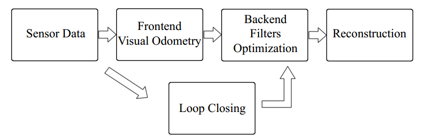

Chapter 2. First Glance of Visual SLAM
1. What is Visual SLAM?
Using cameras to solve the localization and mapping problems.
2. Classic Visual SLAM Framework

A typical visual SLAM work-flow includes the following steps:
2.1 Sensor data acquisition
Acquisition and preprocessing for camera images. For mobile robot, this will also include the acquisition and synchronization with motor encoders, IMU sensors, etc.
2.2 Visual Odometry (VO) (Front End)
Estimate the camera movement between adjacent frames (ego-motion), as well as to generate a rough local map.
2.3 Back End Filters / Optimization
The back end receives camera poses at different time stamps from VO, as well as results from loop closing, and apply optimization to generate a fully optimized trajectory and map.
2.4 Loop Closing
Determine whether the robot has returned to its previous position in order tor reduce the accumulated drift. If a loop is detected, it will provide information to the back end for further optimization.
2.5 Reconstruction
Construct a task specific map based on the estimated camera trajectory.
3. Mathematical Formulation of SLAM Problems
3.1 Motion Equation
where is the input orders, and is noise.
3.2 Observation Equation
where is the landmark, is the robot's position, is the observation noise.